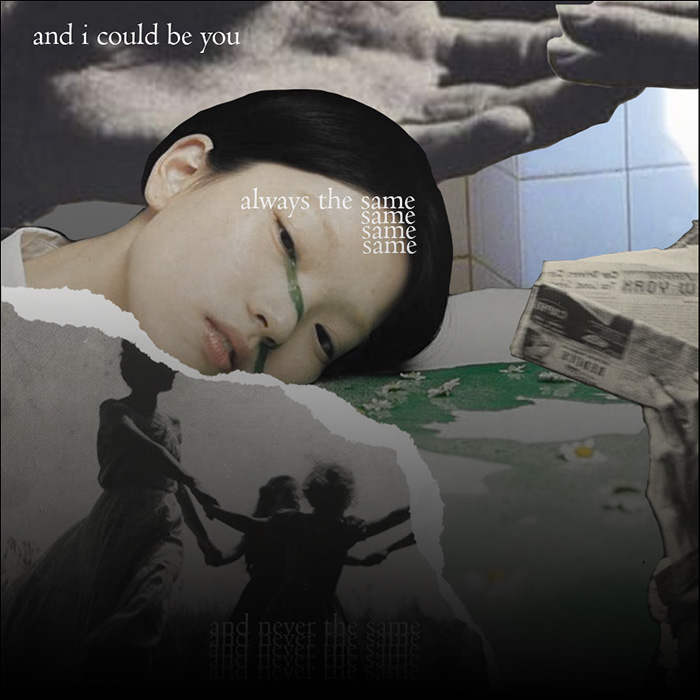

the borderland
When researching for a paper in gender studies, I came across a study that delves into how people (particularly Latino trans-masculine people) were perceived when they transitioned. In a specific instance, many of them were viewed as less white upon transitioning. Diego, a Puerto Rican 24-year-old queer trans man, said that pre-transition he was viewed as a white woman, both in census data and in public as white-passing.
However, post-transition he was seen as Latino and states that his ethnicity was easier to read. It explains the way people of color sit outside the gender binary, both because of the racialization of their presented gender and the invalidity of their queer status in predominately white queer spaces as people of color. As a Chinese trans-femme, there are a lot of presumptions both as an Asian man pre-transition and as an Asian woman post-transition. Asian women fall victim to the orientalism that we’ve seen throughout history.
Yet, I feel as though my transition was made easier because of how Asian men are viewed as more feminine, thus making my transition into femininity more “natural” per say for other people. My girlfriend does not agree, and suggests that it makes it harder as others would question you as to just settle as a feminine Asian man.
It’s interesting to witness, as I feel that the concept of “occupying the borderland”, also researched in writing the paper, is represented very well through these experiences. It represents the dual consciousness of race and gender and embraces the ambiguity and fluidity of identity, and I feel that many transgender people of color occupy and sympathizes with.